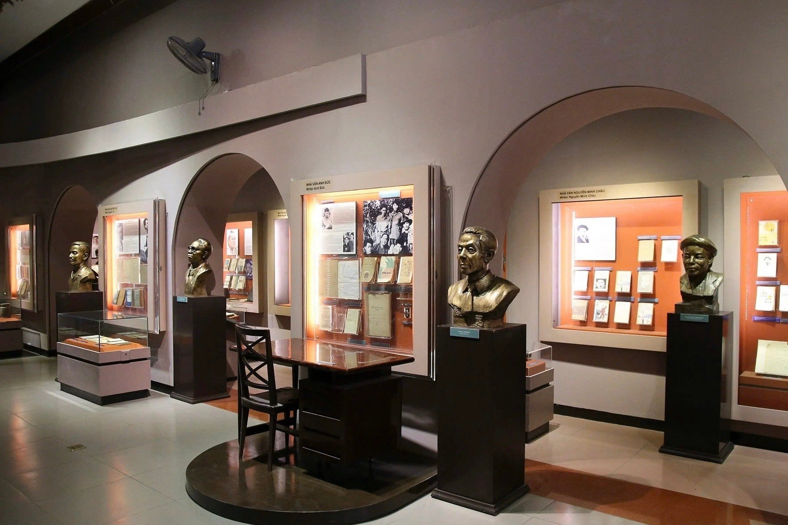
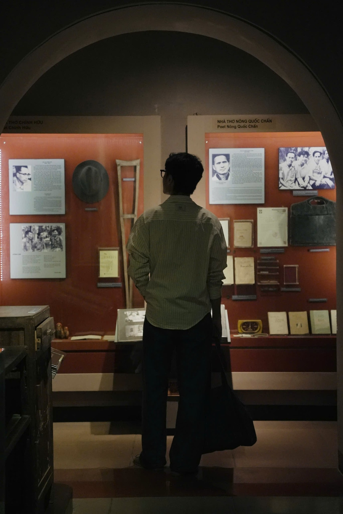
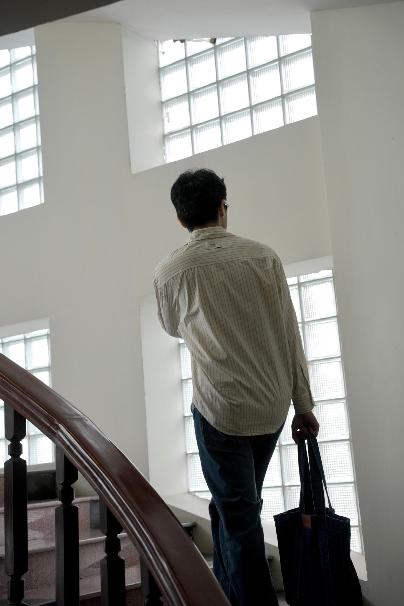
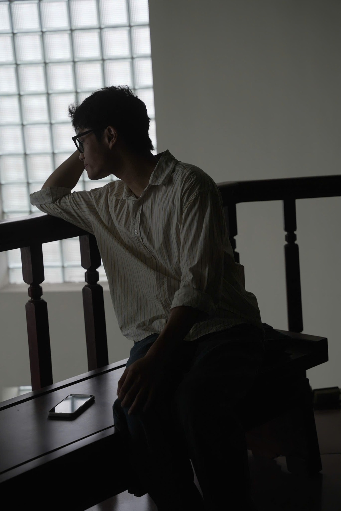
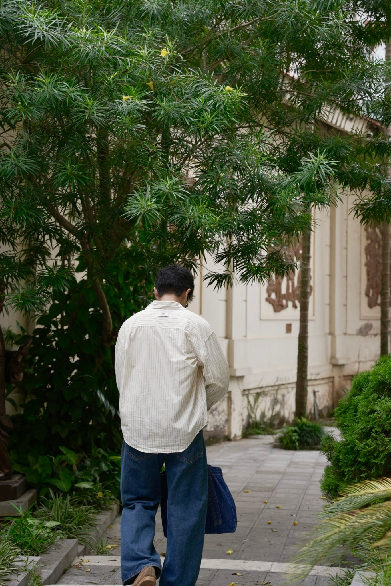
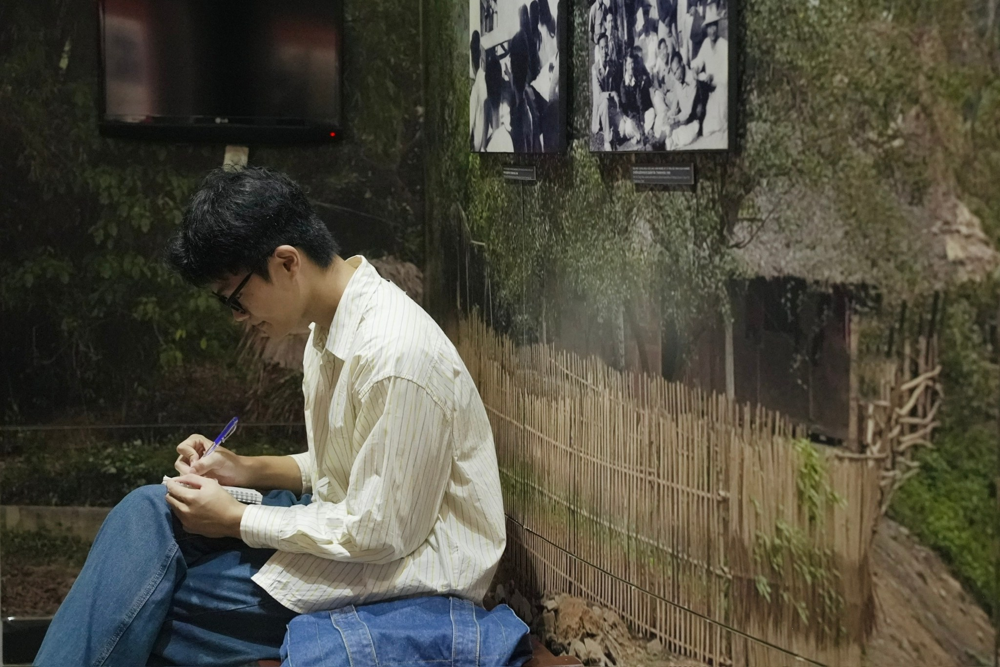
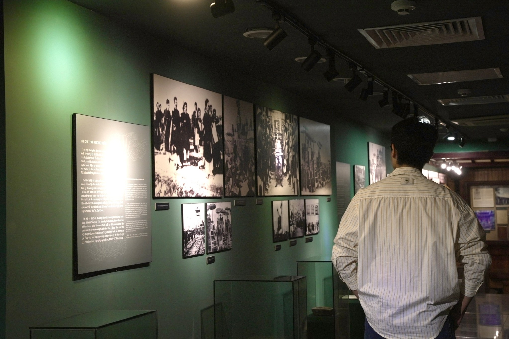

Trong bài
Không chỉ là nơi lưu giữ những dấu ấn văn chương, Bảo tàng Văn học Việt Nam còn sở hữu nhiều góc check-in “lowkey” độc đáo, mang đến những lựa chọn mới mẻ cho người trẻ yêu thích chụp ảnh.
Từ những mái vòm mang nét hoài cổ, cầu thang ngập ánh sáng tự nhiên đến khuôn viên vườn tượng xanh mát, mỗi không gian tại Bảo tàng Văn học Việt Nam đều mang một vẻ đẹp riêng. Sự đa dạng về kiến trúc, màu sắc và ánh sáng cũng tạo nên nhiều góc check-in thú vị dành cho những người yêu thích chụp ảnh.

Check-in dưới mái vòm tại khu trưng bày
Những mái vòm cong kết hợp với hệ thống tủ trưng bày màu cam đất tạo nên background mang thiên hướng hoài cổ. Ánh sáng dịu trong phòng triển lãm càng làm nổi bật các hiện vật và tư liệu văn học.
Để có bức ảnh check-in ấn tượng, người chụp có thể đứng dưới mái vòm, quay lưng hoặc nghiêng người quan sát hiện vật. Góc máy thấp giúp tận dụng đường cong kiến trúc, tạo chiều sâu cho khung hình.

Check-in tại cầu thang ngập ánh sáng tự nhiên
Khác với những khu trưng bày sử dụng ánh sáng nhân tạo, cầu thang của bảo tàng nổi bật với các ô cửa kính lấy sáng, tường trắng và tay vịn gỗ uốn cong. Sự kết hợp giữa các đường nét kiến trúc tạo nên góc chụp ảnh tối giản, phù hợp với phong cách hiện đại.

Ngoài góc chụp khi bước lên cầu thang, khu vực ghế ngồi cạnh cầu thang cũng là một điểm đáng thử. Với nguồn sáng hắt vào từ các ô cửa kính lớn, người chụp có thể tận dụng kiểu chụp ngược sáng để tạo nên khung hình trầm, có chiều sâu và giàu cảm xúc. Nhân vật chỉ cần ngồi tự nhiên, chống tay, nhìn nghiêng hoặc hướng mắt ra khoảng sáng là đã đủ tạo nên bức ảnh mang cảm giác nhẹ nhàng, suy tư.

Check-in giữa khoảng xanh của vườn tượng
Bên cạnh các phòng trưng bày trong nhà, khu vườn tượng rợp bóng cây cũng là một góc check-in đáng khám phá tại bảo tàng. Những lối đi xanh mát, xen giữa các bức tượng danh nhân văn học, mang đến nhiều góc chụp đẹp cho những ai yêu thích không gian ngoài trời. Đây cũng là nơi thích hợp để ghi lại những bức ảnh tự nhiên mà không cần tạo dáng quá cầu kỳ.
Để có những bức ảnh check-in tự nhiên, du khách có thể lựa chọn góc chụp từ phía sau khi dạo bước trên lối đi hoặc đứng ngắm nhìn các tác phẩm điêu khắc. Những cách tạo dáng đơn giản này giúp khung hình trở nên gần gũi mà không cần quá cầu kỳ.

Check-in tại khu ghế nghỉ trong phòng triển lãm
Giữa những tủ kính lưu giữ sách, hình ảnh và tư liệu, khu vực ghế nghỉ trở thành một góc chụp thú vị dành cho những ai yêu thích chụp ảnh bảo tàng theo phong cách đời thường. Ánh sáng thấp kết hợp với màu sắc trầm của các tủ trưng bày tạo nên sắc thái gần giống những thước phim điện ảnh.
Thay vì nhìn trực diện vào ống kính, người chụp có thể ghi lại khoảnh khắc ngồi ghi chép, xem tài liệu hoặc quan sát không gian triển lãm xung quanh.

Check-in tại hành lang triển lãm
Một góc check-in khác không nên bỏ qua là hành lang với những bức tường xanh đậm, hệ thống ảnh tư liệu đen trắng và ánh đèn rọi tập trung. Sự tương phản giữa ánh sáng và bóng tối tạo hiệu ứng thị giác rõ nét, phù hợp với phong cách chụp ảnh mang hơi hướng điện ảnh.
Du khách có thể đứng nghiêng, quay lưng quan sát các bức ảnh hoặc bước chậm dọc hành lang. Góc máy ngang tầm mắt giúp giữ sự cân đối giữa nhân vật và không gian.

Những lưu ý để có bộ ảnh check-in đẹp
Những gam màu trung tính như trắng, be, nâu hoặc đen là lựa chọn phù hợp khi chụp ảnh tại bảo tàng. Trang phục đơn sắc không chỉ dễ phối mà còn hài hòa với màu sắc và ánh sáng của từng không gian triển lãm.
Đối với khu vực ánh sáng yếu, nên giữ máy ổn định và tận dụng nguồn sáng có sẵn. Đồng thời, cần tuân thủ quy định chụp ảnh, không sử dụng đèn flash ở những khu vực hạn chế và tránh làm ảnh hưởng đến trải nghiệm của du khách khác.
Với sự đa dạng về góc chụp ảnh, từ những không gian mang nét hoài cổ đến các góc check-in mới lạ, ít người biết đến, Bảo tàng Văn học Việt Nam là điểm đến đáng thử để vừa lưu lại những bức ảnh mang dấu ấn riêng, vừa khám phá những câu chuyện văn chương thú vị.
Bảo tàng Văn học Việt Nam